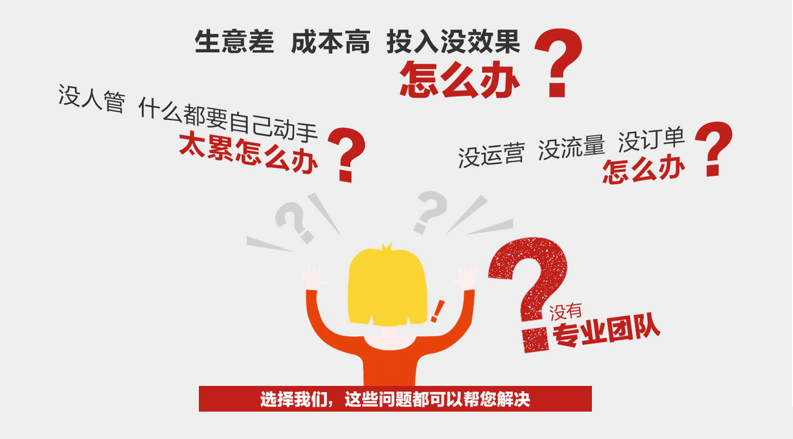

导语
2010年中国电子商务市场交易额已达4.5万亿，同比增长22%，2013年国电子商务市场交易额已达6.25万亿，同比增长27%. 包括美工、运营、推广等基础电商岗位都 急缺人才，中国电商人才缺口慧慧继续增加，企业需求量很大!
做电商你是否遇到以下问题？
想用电商开拓业务,开平台,做网站,花钱做推广,但效果不佳！
以为做电商就是开淘宝,天猫,思维太局限,遇到瓶颈无法突破
不知道如何搭建电商团队,优化销售流程,让团队高效率工作

面对问题你需要全方面的落地学习
除了学习专业知识，更注重学员的实用性及可操作性。
学员将所学的内容直接运用的自己的店铺或者企业工作 中的应用。
行业案例的分享与总结，以及在企业中电子商务运营推广工作的相关技巧及经验的分享。
教给 学员的是技能及经验，不单单是知识点的介绍。
电商 微商 全网营销
轻松打造互联网营销独立品牌
不论是个人创业，还是企业转型
打造自己的独立品牌是快速占领互联网消费市场、稳步发展的必经之路
热销货源
美工装修
运营策划
营销推广
手机微店
微信公众号
朋友圈营销
精准加粉
微商城搭建
微商城装修
分销方案
品牌策划
平台推广
新媒体推广
社群推广
搜索排名
全面互联网营销培训
品牌定位网店优化淘宝美工
活动策划分销管理全网营销

北大青鸟最强名师团队
顶尖名师齐聚，教学总监领衔授课
支持你成为一个受人尊重的专业人才
-
1、
拥有企业最急需
全国最大的职业教育研究院团队。 依托北京大学优质雄厚的教育资源北大青鸟通过最专业的岗位分析，提取出企业最需要的技术技能，转化为专业知识，提供给青鸟学员。
的技术 -
2、
拥有优秀的职
专业技术与职业素养同发展提供多方位人才服务，循序渐进，满足不同阶段的职业需要，打造符合企业需求的个性化人才，国内职业导向训练课程首发。在职业发展中走得更远，发展更好。
业素养 -
3、
全方位的就业
拥有总部专家、外聘行业专家、职业规划师、技术顾问、就业专员、社区技术专家等专业的老师进行全方位的就业服务，这也是北大青鸟就业服务的内在保障。
服务 -
4、
万家合作就业
北大青鸟积累的合作企业资源已经超过5万家为广大毕业学员提供了更有保障的就业资源，2013年度北大青鸟毕业学员成功入职5500余家合作企业从事IT技术工作。
企业 -
5、
科学的就业
就业服务体系不仅帮助学员解决基本的就业问题，更关注已就业学员未来的职业发展，针对不同阶段的学员提供有针对性、个性化的就业服务，协助支持青鸟学员的职场提升过程。
服务